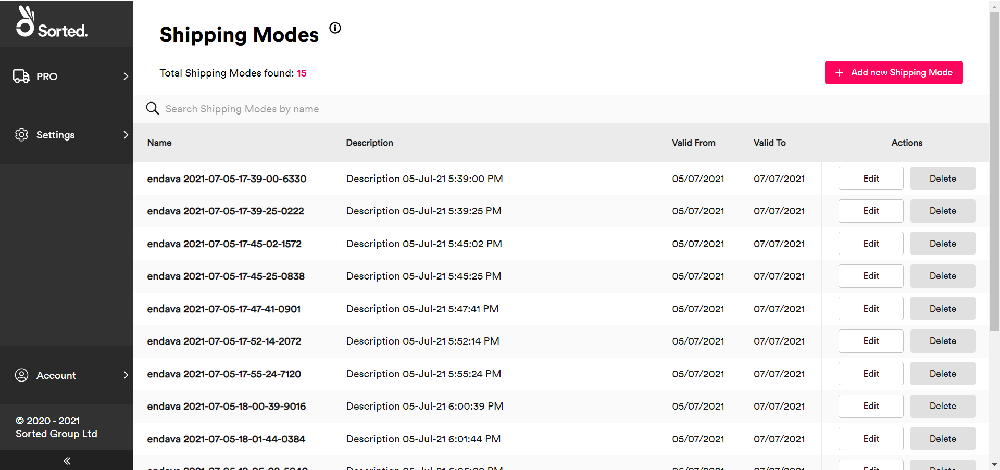
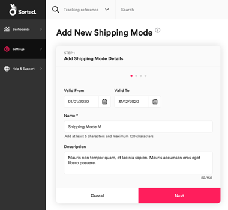
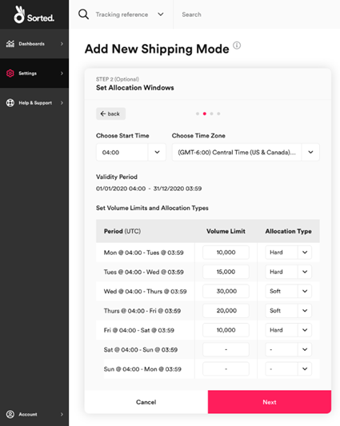
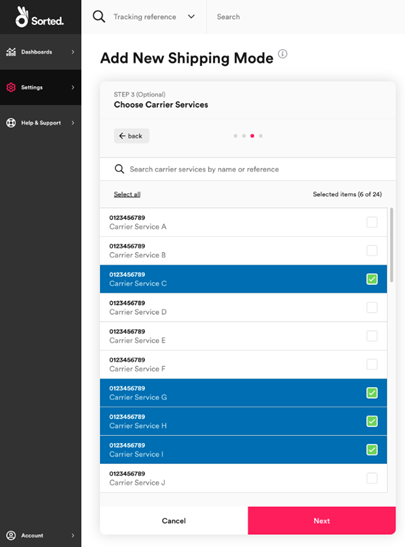
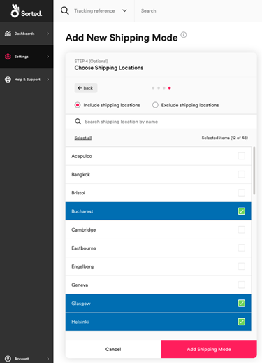

Managing Shipping Modes
The Sorted Portal's shipping modes feature enables you to configure broad-scale shipping patterns that work in conjunction with your shipping rules. This page explains how to use the Shipping Modes page to set up allocation limits and validity dates for your carrier services.
[!include[_development_statement](../pro/api/includes/_development_statement.md)]What Is a Shipping Mode?
[!include[_what_is_a_shipping_mode](../pro/api/includes/_what_is_a_shipping_mode.md)]Managing Existing Shipping Modes
You can view your existing shipping modes from the Settings > Shipping > Shipping Modes page.

The Shipping Modes page displays the following information for each mode:
- Name
- Description
- Valid From / To - These are optional validity dates for the entire shipping mode and should not be confused with allocation windows (that is, the timeframe in which an allocation limit applies).
- Actions - Edit - Click Edit to edit the mode. The process of editing an existing mode is largely the same as that used to set up a new mode, as explained in the Adding a New Shipping Mode section. Note that you cannot amend the Name of an existing shipping mode.
- Actions - Delete - Click Delete to remove the mode from the list entirely.
Adding a New Shipping Mode
To add a new shipping mode, select the Settings > Shipping > Shipping Modes page and click Add New Shipping Mode. The Portal displays the Add Shipping Mode Details card of the Add New Shipping Mode page.
Step 1: Adding Shipping Mode Details
The Add Shipping Mode Details card enables you to enter identifying information about your new mode:

To add shipping mode details:
- Optionally, enter Valid From and Valid To dates. The mode only applies during the specified time period.
- Enter a unique Name of between five and 100 characters for the mode.
- Optionally, enter a Description of up to 150 characters for the mode.
- Click Next to display the Set Allocation Windows card.
Step 2: Setting Allocation Windows
The Set Allocation Windows card enables you to define the volume limits and start times for the allocation windows within the shipping mode. Each allocation window is 24 hours long, and you can configure up to seven windows in each mode (that is, separate allocation limits for each day of the week).

To configure allocation windows:
- Select a start time for your allocation windows from the Choose Start Time drop-down menu. This time is used as the start time for all windows within the mode.
- Select a time zone for your start time from the Choose Time Zone drop-down menu.
- For each allocation window that you want to set an allocation limit for:
- Enter a Volume Limit. This is the maximum number of shipments that should be allocated to the mode's carrier services during the specified timeframe.
- Select an Allocation Type. This value defines what happens when a service reaches its limit for that allocation window. There are two options:
- Soft - The carrier service can still be allocated to if that carrier is the only carrier that is able to take the shipment.
- Hard - The carrier is no longer available for allocation and is excluded from all selections until the end of the daily allocation window.
For example, you might specify the following allocation windows:
| Period | Volume limit | Type |
|---|---|---|
Mon @ 03:00 (UTC) - Tues @ 02:59 (UTC) |
10,000 |
hard |
Tues @ 03:00 (UTC) - Tues @ 02:59 (UTC) |
15,000 |
soft |
Wed @ 03:00 (UTC) - Tues @ 02:59 (UTC) |
20,000 |
soft |
Thurs @ 03:00 (UTC) - Fri @ 02:59 (UTC) |
30,000 |
hard |
Fri @ 03:00 (UTC) - Sat @ 02:59 (UTC) |
20,000 |
soft |
Sat @ 03:00 (UTC) - Sun @ 02:59 (UTC) |
null |
- |
Sun @ 03:00 (UTC) - Mon @ 02:59 (UTC) |
null |
- |
These rules can be expressed as:
- For 24 hours from every Monday at
03:00 (UTC)the selected carrier services have a hard limit of10,000allocations - For 24 hours from every Tuesday at
03:00 (UTC)the selected carrier services have a soft limit of15,000allocations - For 24 hours from every Wednesday at
03:00 (UTC)the selected carrier services have a soft limit of20,000allocations - For 24 hours from every Thursday at
03:00 (UTC)the selected carrier services have a hard limit of30,000allocations - For 24 hours from every Friday at
03:00 (UTC)the selected carrier services have a soft limit of20,000allocations - For 48 hours from every Saturday at
03:00 (UTC)the selected carrier services have no limit (i.e. "infinite" allocations)
These windows would then repeat every Monday at 3:00 for the duration of the shipping mode (as defined in the Valid To date from step 1).
Once you have configured your shipping windows, click Next to display the Choose Carrier Services card.
Step 3: Selecting Carrier Services
The Choose Carrier Services card enables you to select the carrier services that your shipping mode applies to.

Select the carrier services that you want the limits specified in step 2 to apply to. To search for a specific carrier service, type a name into the search bar.
Once you have selected the required carrier services, click Next to display the Choose Shipping Locations card.
Step 4: Selecting Shipping Locations
The Choose Shipping Locations card enables you to select the shipping locations that your shipping mode applies to. You can either include shipping locations (i.e. "the mode applies to all shipments originating from these shipping locations") or exclude shipping locations (i.e. "the mode applies to all shipments except those originating from these shipping locations").

To link shipping locations to your mode, use the radio buttons to select whether you want to Include shipping locations or Exclude shipping locations and then select the shipping locations you want to link from the list.
To search for a specific carrier service, type a name into the search bar.
Once you have finished selecting shipping locations, click Add Shipping Mode to save your changes and close the Add Shipping Mode page.